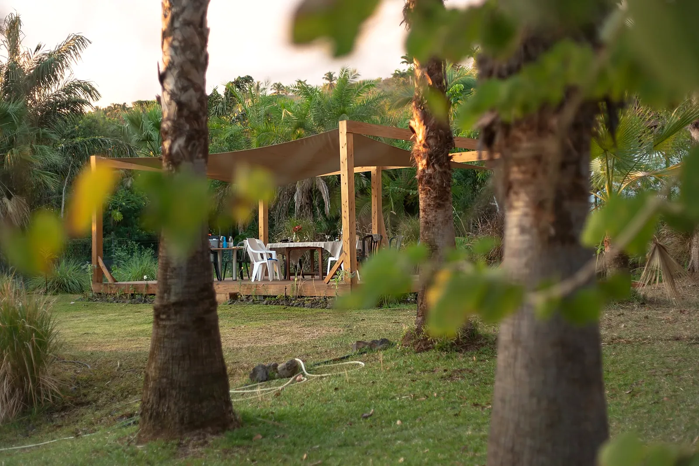
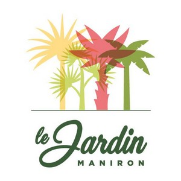
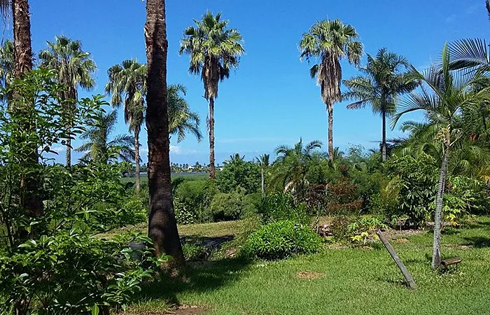
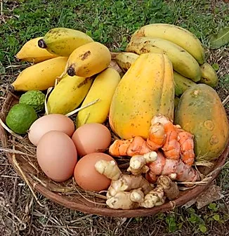
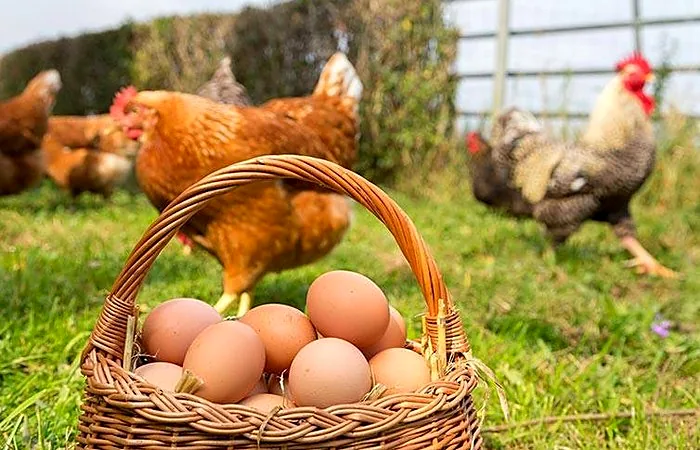
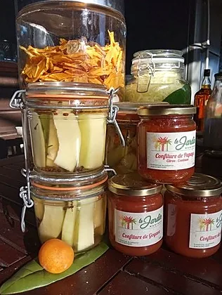
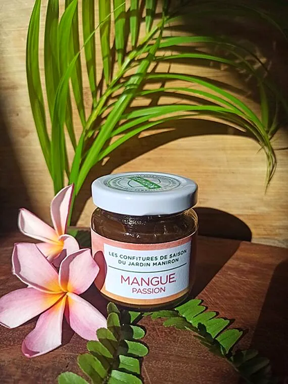
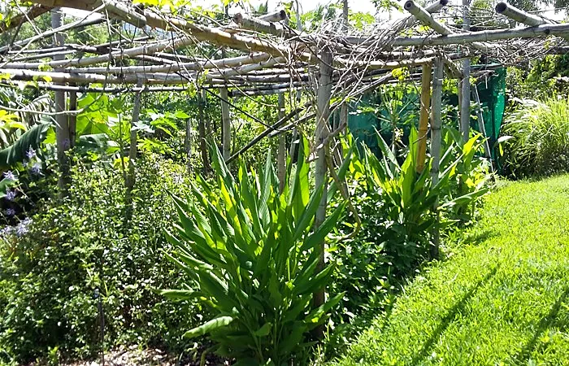
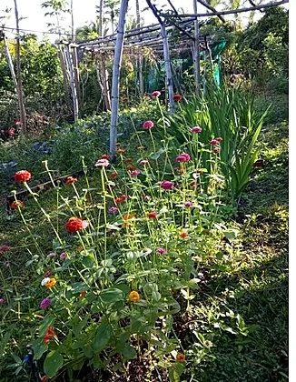
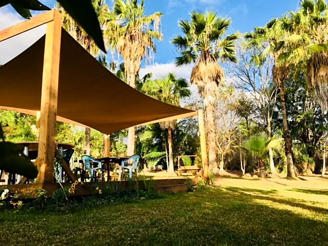

Ferme-auberge bio · Étang-Salé-les-Hauts
Le Jardin Manironun jardin créole à partager
Cultures vivrières et fruitières, aromatiques, œufs bio. Ateliers, brunchs et belles soirées sous les palmiers.
7, route du Maniron, L'Étang-Salé · 0693 53 31 57

Le jardin
Une ferme bio en agroforesterie
Dans les hauts de L'Étang-Salé, le Jardin Maniron cultive en bio, en agroforesterie : arbres fruitiers, aromatiques, fruits et légumes lontan, cocotiers, palmiers et cotonniers poussent ensemble, comme dans un vrai jardin créole.
« Le Jardin Maniron a un air de paradis… »
Une grande partie du terrain est aménagée pour accueillir le public : on y vient pour une visite, un atelier, un brunch, un repas de la ferme-auberge ou une soirée entre amis, bercé par le chant des oiseaux.

Du jardin à la table
Les bons produits du Jardin
Fruits, légumes et œufs bio, mais aussi épices, aromates, confitures et fruits secs artisanaux : tout ce que le jardin donne, transformé sur place avec soin.




Papaye citron-combava, goyave, mangue passion
Les fruits du jardin, cuisinés en petites séries et mis en pot à la ferme.
Achards, sirops, fruits séchés
Achards, lacto-fermentation, sirops et Gingerbeer : les saveurs du jardin à garder toute l'année.
Repas et buffets sur commande
Agréée ferme-auberge, la maison prépare repas et buffets pour vos tablées, autour de la varangue.
La Ruche d'Étang-Salé, au Jardin
Fruits, légumes, pâtes fraîches, tofu pays, pains au levain et à l'ancienne, confitures, pesto, aromates : tout bio et local, à retrouver à la Ruche-Qui-Dit-Oui du Jardin Maniron. Il suffit de créer son compte sur laruchequiditoui.fr et de choisir la Ruche d'Étang-Salé.
Atelier Gingerbeer · 100 % DIY
L'art de la Gingerbeer
Boisson fermentée, probiotique et naturelle, très agréablement pétillante et peu sucrée : au Jardin Maniron, vous apprenez à la faire vous-même, et vous découvrez à quel point c'est facile.
Un topo sur la fermentation, pour tout comprendre.
Une visite du jardin, avec cueillette.
L'élaboration puis la dégustation, ensemble.
Vous repartez avec votre bocal de levain de gingembre.

Le Brunch du Jardin
Un brunch gourmand, fait maison
Les brunchs sur réservation se dégustent dans le jardin. Au menu du dernier brunch publié :


Évènements & visites
Votre fête, au cœur du jardin
Location évènementielle, cuisine, transformation et visites : le Jardin Maniron accueille vos repas, fêtes et rencontres dans un cadre bucolique. Marchés de créateurs, concerts, spectacles et soirées apéro-tapas y ont déjà rassemblé de belles tablées.
Offrir pour Noël
Un cadeau qui pousse au Jardin
Un atelier Gingerbeer à offrir
Un moment au jardin et un bocal de levain de gingembre à rapporter : le cadeau qui pétille longtemps.
Des confitures du Jardin
Papaye citron-combava, goyave, mangue passion : un assortiment de pots maison, à composer avec Nathalie.
Un brunch au Jardin
Un moment gourmand et fait maison sous les palmiers, à partager en famille.
Illustration
Venir au Jardin
Rendez-vous route du Maniron
Adresse · 7, route du Maniron, 97427 L'Étang-Salé (Étang-Salé-les-Hauts)
Téléphone · 0693 53 31 57
E-mail · jardinmaniron974@gmail.com
Ateliers · dates et réservations sur Weezevent